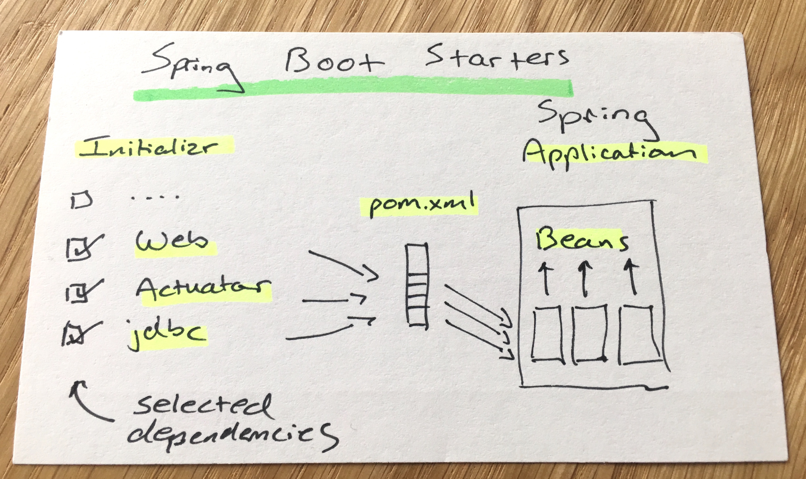

What is a Spring Bean really?
Today I was feeling rather lost in my attempts to understand what is going on inside a Spring Boot application.
Being new to Spring, I had spent a fair bit of time googling and reading, but most of the things i came across simply assume prior knowledge when it comes to fundamental concepts like 'Beans'.
Mark Fisher, my friend and colleague here on the Spring team at Pivotal, came to my rescue and offered to explain. In exchange, I promised to write about it.
The result is this blog post and https://github.com/markfisher/spring-boot-hello-world.
In the beginning there was XML
Spring started by providing a much-simpler-than-J2EE, XML-based way to configure the main classes that your Java application depended on.
Simply instantiating everything with new in Java was not ideal because this meant that you had to hardwire all those dependencies into your code, so you couldn't easily use say one database for local testing and a different database for CI or production.
Instead of writing your own factories which abstracted the creation of things like database connections, you could use Spring and provide the details of all those things in XML.
Spring would read some environment-specific XML at startup and create instances of those classes based on what was in the XML.
And those instances were... Beans, something like this:

Now there are @Annotations
Fast forward a few years and the XML has been replaced by Java code annotated as @Configuration and @ConfigurationProperties.
@Configuration
@EnableConfigurationProperties(GreeterProperties.class)
public class GreeterAutoConfiguration {
@Bean
public Greeter greeter(GreeterProperties properties) {
return new Greeter(properties.getGreeting());
}
}
Notice that the factory method is annotated as @Bean.
If the configuration class is included in the META-INF/spring.factories of a dependent jar, then a Spring Boot application will automatically call the factory method to create a singleton instance of that class on startup.
This is the magic
and those instances are still called Beans
What about Spring Initializr and all those starters?
Now that configuration scanning is no longer such a mystery, the role of Spring Boot Starters is easier to understand.
By including a starter in the dependencies of your Boot App, you are telling Spring to scan for configuration classes inside that starter, which results in the automatic creation of the Beans for that starter.

Easy!
powered by pub-server and pub-theme-pubblog